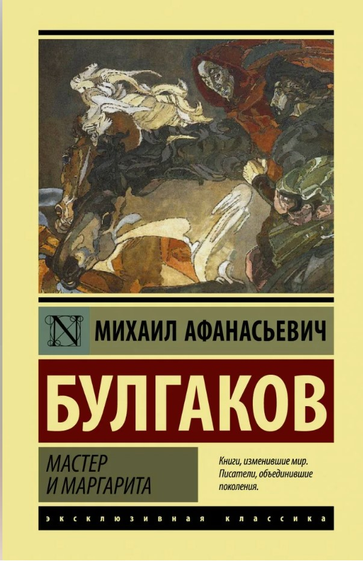
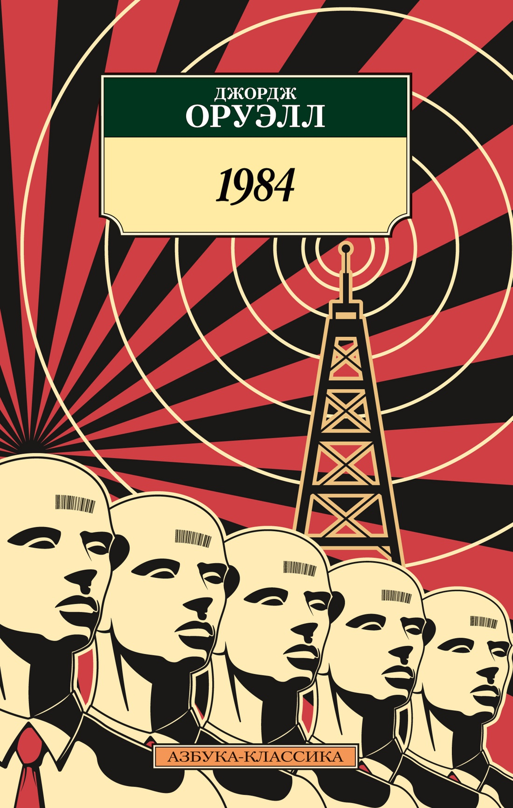
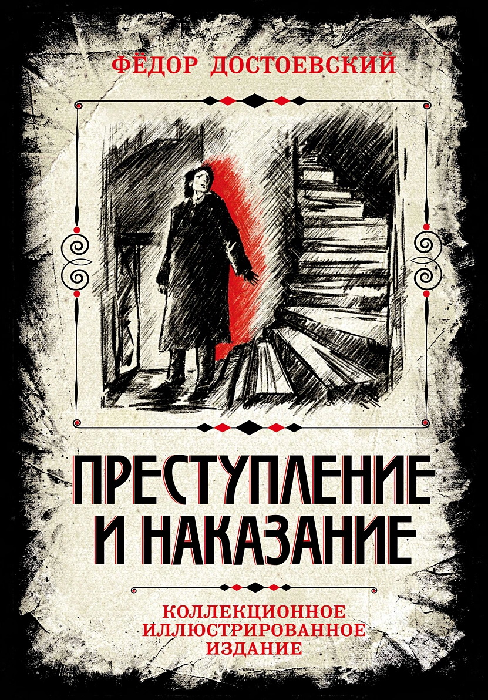

Написать рецензию
Норвежский лес
Роман о любви, потере и взрослении, действие которого происходит в Токио в конце 1960-х годов. Главный герой, Тору Ватанабэ, вспоминает свою юность и отношения с двумя девушками - Наоко и Мидори.

Мастер и Маргарита
Фантасмагорический роман, сочетающий сатиру, фантастику и философскую притчу. В произведении переплетаются две сюжетные линии: история визита дьявола в Москву 1930-х годов и роман о Понтии Пилате.

1984
Антиутопический роман о тоталитарном обществе, где правит Большой Брат. Главный герой, Уинстон Смит, работает в Министерстве правды и начинает сомневаться в системе, что приводит к трагическим последствиям.

Преступление и наказание
Психологический роман о студенте Раскольникове, совершившем убийство старухи-процентщицы. Произведение исследует темы морали, раскаяния и искупления через внутреннюю борьбу главного героя.
Книга не найдена. Попробуйте изменить запрос.